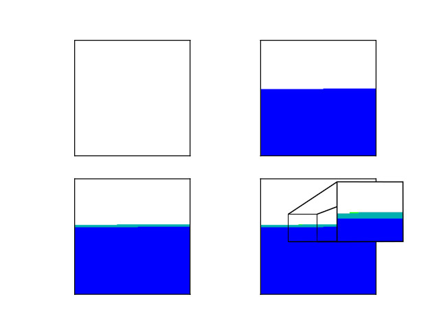
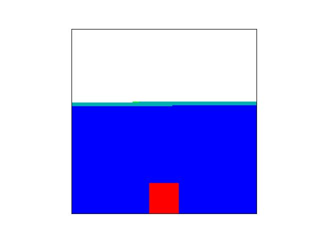

In the California electrical grid,


Navigate through the presentation by clicking, scrolling, and dragging around the Presentation.
Alternatively follow the path of electricity through the power grid by using the arrows at the bottom
References:
[1]